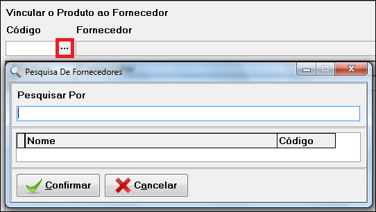
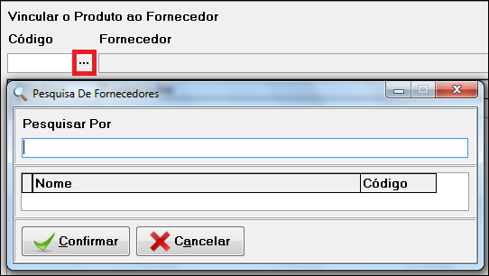

Para cadastar os produtos da sua empresa, clique na aba "Cadastro", selecione "Produtos", logo após clique em "Cadastro De Produtos", a imagem abaixo mostra o procedimento:
Ou clique no atalho de cadastro de produto:

A seguir aparecerá a seguinte tela:

Ela se abre na aba de pesquisa, onde pode pesquisar os produtos já cadastrados...
A pesquisa pode ser feita através do Código, Nome, Unidade, Custo, Preço Vista, Juros, Preço Prazo, Estoque, entre outros, como mostra a tela ao lado...
Para fazer o cadastro selecione a aba "Cadastro" na parte inferior da tela.

Após clicar na aba de cadastro a tela de cadastro irá abrir, basta clicar no botão incluir ou apertar [F2] no teclado, para preencher os dados do cliente.

Após preencher os campos, clique no botão salvar ou aperte [F2] no teclado, para cadastrar os dados dos clientes.

Ou caso desejar pode cancelar o cadastro antes de salva-lo clicando em abandonar, ou aperte [F8] no teclado.

Depois do cadastro concluído, pode-se altera-lo clicando no botão “Alterar” ou apertando [F4] no teclado.

Depois de salvo, pode-se excluir o cadastro clicando no botão "Excluir" ou apertando [F3] no teclado.

Clicando na aba de fornecedor na parte inferior, pode-se vincular os produtos cadastrados com os fornecedores cadastrados.
 

Apertando [F6] no teclado ou clicando nos [...], "três pontinhos" na tela, pode-se pesquisar os fornecedores cadastrados, e vincula-los aos produtos.
{kind=link}